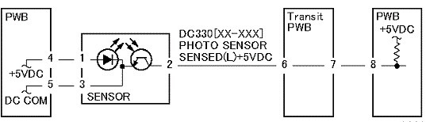

2.2.3.1 Reflective 传感器 故障 FIP 
步骤

(图 1) 2001
输入 DC330 [XXXX-XXX]. Block 传感器 和/与 a 纸张 of blank 纸张. Is [低] 已显示?
Is the 电压 之间 传感器 销-2 (+) 和 the GND (-) +5VDC?
检查 连接 之间 传感器 销-2 和 the PWB 销-8 用于 打开 电路 和 接触不良.
If 编号 问题 发现, 更换 PWB.
Is the 电压 之间 传感器 销-1 (+) 和 销-3 (-) +5VDC?
检查 传感器 用于 contamination 和 不正确的 安装.
If 编号 问题 发现, 更换 传感器.
拆卸 纸张 of 纸张 blocking 传感器. Is [高] 已显示?
检查 ...的安装 传感器. If 编号 问题 发现, 更换 传感器.